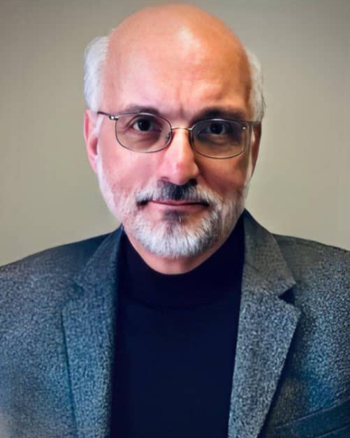
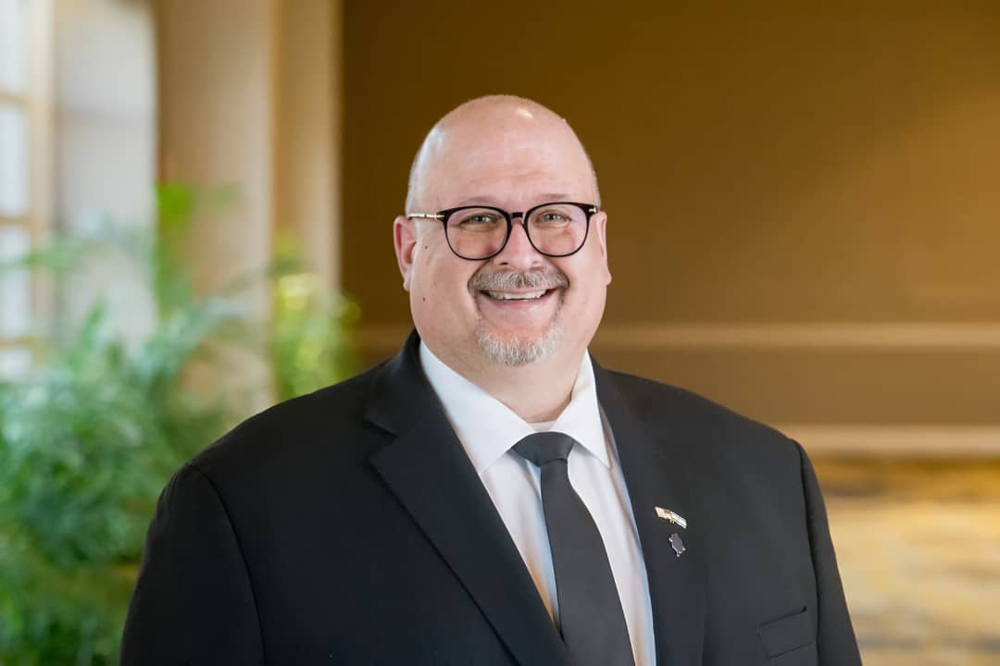
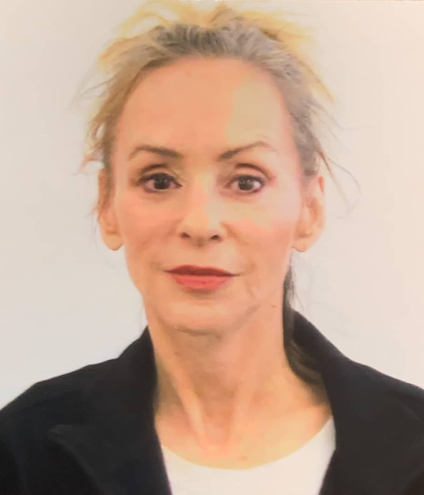
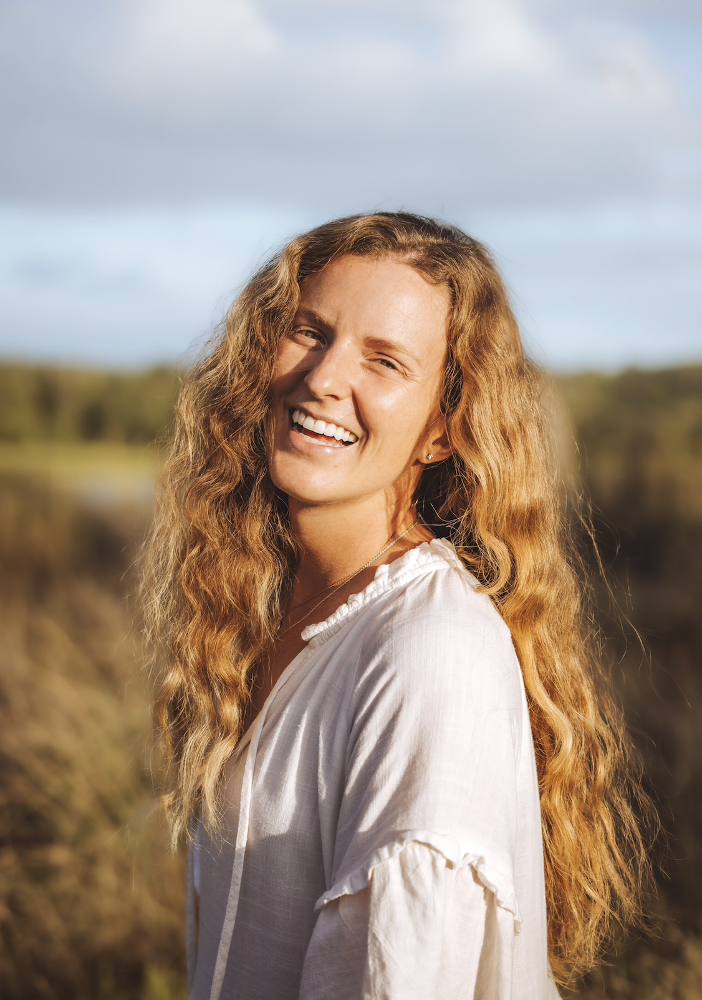
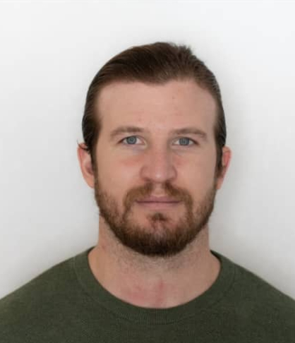

The Vision Africa Media Training Institute offers an annual program-packed, international standard, training for media professionals. Opportunities and growth in radio broadcasting and video are fast-paced, as the electromagnetic spectrum is increasingly packed with dynamic and innovative frequency operators in the broadcast industry. Our goal is simple – be a platform for comprehensive, fast-paced, resourceful training, providing hands-on innovative updates for media practitioners and students looking for personal development.
Since 2012, Vision Africa, in partnership with Sharing International, has demonstrated a commitment, not only to excel with the Vision Africa Radio 104.1FM, but also to share experiences, methods, and innovative techniques with the media community within and outside Nigeria. Creating spaces for genuine connections, age-appropriate content, and always looking for ways to advocate for peace and social justice, for the sake of our shared humanity.
Over the years, our Media Institute has grown to encompass attendees from over ten nations across East and West Africa, both on-site and online. The curriculum for the Institute is continually evolving to meet the changing needs and technologies of the media landscape, which is reflected in what we offer every year from an ever-evolving training curriculum.
Our Media Institute faculty, consisting of professionals from the United States, Canada, Kenya, and Nigeria, eager to share their knowledge and passion, come with several years of expertise and training experience in various forms of media; and we have continually tinkered with combining the right mix for every dynamic group of trainees.
At Vision Africa, in over 2 decades of our broadcast through our Radio Vision Africa 104.1FM, we have kept the singular objective of communicating character formation and the wholesomeness of social good to our audience. Our doors have remained open to organisations, Tertiary institutions and Ministries, offering free media training, Industrial training/attachment opportunities, practical use of our studios for vocational use. Our collaboration has spanned institutions such as – Abia State University, Gregory University, Abia State Polytechnic, Broadcasting Corporation of Abia. Methodist Church Nigeria, etc.
Bishop Dr. Sunday Ndukwo Onuoha holds a doctorate degree from the Southern Methodist University's Perkins School of Theology in Dallas, Texas. He is the President/Founder, Vision Africa, owners of Vision Africa Radio, The Agnes Onuoha Memorial Hospital project and a bouquet of other community development programs.
He was the first Bishop in-charge of Evangelism in the Methodist Church Nigeria, serving for six years. Named the World Methodist Evangelism's Regional Secretary for West Africa in 2012; he is a church planter, Board Member - World Methodist Evangelism, and Committee member - World Methodist Evangelism Institute, Emory University.
A recipient of the ‘Global Peace Award’ (2013); and the ‘NRB Media Award (2016), he served as Special Assistant on Privatization to Nigerian President Olusegun Obasanjo's Presidential, in 2003. Former Co-Chair of Interfaith Dialogue Forum for Peace (IDFP), and the Founding Executive Director of the Nigerian Inter-Faith Action Association (NIFAA) since 2009.

Dr. Chuck Pollak holds a Ph.D from Howard University and lives in Norfolk, Virginia. He is an author, educator and professional broadcaster with over fifty years’ experience in the industries of broadcasting, journalism and higher education, Chuck has helped establish and manage radio and television stations in North/Central America, Eastern Europe, Africa and the Middle East.
He’s coordinated and taught management and production seminars for industry professionals in 30 countries through Sharing International, teaching courses in broadcasting, media research and public relations. Chuck continues as a consultant for radio and educational institutions internationally and serves as President/Founder of Sharing International.

Troy A. Miller is a senior executive with more than 30 years of management and business experience. He has served as president & CEO of NRB since July 2022, having previously served as the interim CEO of NRB starting March 2019. Miller is also president & CEO of NRBTV, where he has served since June 2005.
Under Miller’s leadership, NRB has expanded its membership base, enhanced financial stability, and elevated the annual NRB Convention, which now attracts nearly 6,000 Christian media professionals worldwide.
For ten years, Miller worked for Gateway, Inc. and was involved in leading several business startups, including Gateway’s expansion into Europe and Asia, with new manufacturing facilities and a global information technology application strategy. Also served as executive vice president and chief operating officer for D. James Kennedy Ministries.
Miller has made media appearances on outlets including The Washington Times, TBN, Salem News Channel, Real America’s Voice, Fox & Friends, and The Christian Post. He also regularly contributes op-eds to outlets such as Newsmax, Fox News, and The Daily Caller. He served with distinction in the US Navy from 1983 –1988; and resides in Nashville, Tennessee with his wife Marsha.
Dr. Vic Costello holds a PhD in Communications from the University of Tennessee-Knoxville and serves as an Associate Professor of Cinema and Television Arts at Elon University, North Carolina; also filling the role of Director for the Communications Core Curriculum and Minor. For nearly 30 years, he has been dedicated to teaching courses in multimedia design, filmmaking, radio/TV broadcasting.
In his 25-year membership with the Broadcast Education Association (BEA), he has served as BEA board President and Chair of the BEA Festival of Media Arts. Beyond the classroom, Dr. Costello’s wealth of practical experience, includes work in TV station operations, corporate video, media management, and directing and producing live events and awards shows.
Authoring the textbook "Multimedia Foundations: Core Concepts for Digital Design," now in its third edition (released in July 2023), Dr. Costello genuine passion for students' understanding of visual design, audio and video production, editing, and storytelling, and hopes to raise future generations of media professionals and storytellers.
Chief Raymond Iheanacho Nkemdirim is an experienced security intelligence administrator who served the Nigerian nation for 35yrs in the State Security Service (SSS); attaining the peak of his career, and retired meritoriously as Director Operations and obtaining the award of Member, Order of the Federal Republic (MFR) from Mr. President.
After retirement, he was retained on contract as Special Assistant to the Director General, DSS; successfully coordinating several operations that facilitated the containment of violent threats across major Nigerian cities through massive modernization of the Service’s technical intelligence (TECHINT) capability.
He recently published a book -“Nigerian Security Challenges: A Compendium of Selected Intelligence Essays”, and has served at various times, as Visiting Lecturer to the Post Graduate School of the Nigerian Defence Academy (NDA), Kaduna; and a resource person at several security institutions including the National Institute for Security Studies, Nigerian Army Resource Center, Defence Intelligence College.
He was Special Adviser on Security to H. E. Governor Emeka Ihedioha of Imo State between June 2019 and January 2020, and has been actively involved in several initiatives to restore peace in the South East of Nigeria.

Sharon Geiger erves as Assistant General Manager/Outreach Director at KCBI FM in Dallas, Texas, USA. She oversees KCBI’s HD-2 radio station, produced programming and assists with major donor relationships. Through KCBI Outreach, Sharon mobilizes listeners to put their faith into action. Sharon has served in various leadership positions.
An award-winning broadcast journalist, she has trained Christian broadcast professionals around the world. Sharon has an M.A. in Global Leadership from Wheaton College. Sharon and her husband, Don, live in Dallas. They are proud parents and grandparents and active in their church and community.
Sarafina N'kenta is an Attorney and a certified Social Behavioral Change Communication (SBCC) expert, with a career spanning over 23 years, in skills-set and experiences relevant to lobbying for law reform initiatives in Women’s Sexual Reproductive Health and Rights, Advocacy and policy drafting for Gender rights, Maternal and Adolescent health rights, RH/Domestic Violence Hotline development and management, Community engagement and mobilization, program development/facilitation for youths and women in marginalized communities.
In 2010, she qualified as an “IPAS Expert in Residence”, and continues to do in-depth program development work in Gender, and Human rights, head-hunting/recruitment for NGO’s, NGO capacity strengthening and management.
She is currently the Chief Operating Officer of Vision Africa; Vice President of the Institute for Humanitarian Studies & Social Development (IHSD) Abia State; and the current Deputy National President of IHSD Alumni Association.

Maddy Wilson is the co-founder of The Wander Studio - a mobile creative studio connecting brands and businesses who care about people and the planet to adventurous locations.
She graduated with High Honors in Broadcast Journalism from the University of Texas at Austin and went on to have a career in advertising and marketing before becoming an entrepreneur.
As the Brand Strategist and Creative Director of The Wander Studio, she blends her strategic understanding of digital platforms with her creative eye to tell stories of impact around the globe

Jeff Wilson is the co-founder of The Wander Studio - a mobile creative studio connecting brands and businesses who care about people and the planet to adventurous locations.
He has an undergraduate's degree in Business Honors and a Masters in Business from The University of Texas at Austin, and after a career in public accounting, decided to follow his creative passions.
He is the CFO, and lead Photographer for the Wander Studio, and his eye for detail and precision behind the lens has helped brands from startups to Fortune 500s tell better visual stories that inspire and connect with their audiences.
Don Geiger has been writing and telling stories for more than 40 years. He has written and published thousands of news and feature stories about topics ranging from high technology to railroads, electric utilities and business management.
He launched his career as a newspaper reporter and then moved into corporate communications as a corporate journalist, market-communications leader and project manager. He also owned Geiger Associates Inc., a communications agency that provided writing, strategic-planning and project-management services to many Fortune 500 corporations.
He currently works as a writer, photographer and storyteller at Texas Instruments in Dallas, Texas. TI is one of the world’s largest semiconductor manufacturers.
Prof. Uwaoma Kalu Uche was the pioneer Head of Mass Communication, Abia State Polytechnic, Aba. He is currently the Deputy Vice Chancellor (Administration) Gregory University Uturu Abia State. A professor of Mass Communication with 32 years teaching and research experience in Mass Communication, cutting across 11 tertiary institutions in Nigeria.
He is a member of several professional bodies such as the Nigerian Institute of Public Relations NIPR, and the Association of Communication Scholars and Professionals.
His experience spans serving in many capacities like: Former Deputy Vice Chancellor (Academic) Gregory University, Uturu, and former Dean College of Social and Management Sciences. Former Director JUPEB/ICEP. Former Head, Departments of Mass Communication - Calabar Polytechnic, Rhema University Aba, Hezekiah University Nkwere, Temple Gate Polytechnic Aba, and the Abia State University Uturu amongst others.
Contact
Address: 1 Ogurube Layout Umuahia, Abia State Nigeria.
Email: info@visionafricafmradio.com
Phone: (+234) 070 6576 3061